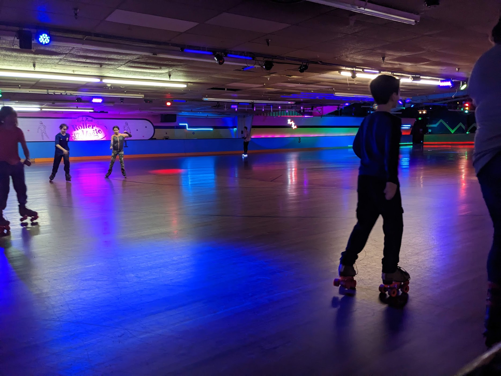

roller rinks are alive and well in the Hudson Valley, each has something unique to offer.
Skate Time
Skate Time is a 21st century constructed rink with great personality, in house DJs, a the Mid-Hudson Misfits roller derby team, and the nicest skating surface in the Hudson Valley. Staffed by skaters and concession stand so good you'll arrive hungry on purpose. Only gripe I have is the DJ does not take requests. An absolute must visit if shuffle skating is of interest to you!
Operating Hours
- Thursday 18+ Night 6–9pm
- Friday 3–7pm
- Saturday 11–3pm & 5–10pm
- Sunday 10am-12pm (Tot Time), 1pm–7pm
Wood N' Wheel
Wood N Wheel is a birthday party facility that happens to have a vintage roller rink. It has a lot more activities for kids on site, but it is not to be overlooked, especially if you hold an interest in figures. It is the only rink in our immediate geographic area with lines for figures printed onto the rink. A true gem if you catch it at the right time of day. Occassionally offers adult nights.
Operating Hours
- Friday 6:30–9pm
- Saturday 10am-12pm (Tot Time), 12:30–5pm, & 6:30–9pm
- Sunday 12:30–4pm
Hyde Park Roller Magic
A once highly regarded spot for the roller skating community, Hyde Park Roller Magic has had a tumultuous couple of years and was listed for sale in June of 2024. Currently its future is unclear, and the floor and facilitiy are in need of maintenence and renovation. In the meantime, it's still operating and the only rink on the east side of the river. It's worth the visit if the location is convienent to you. This rink is also notably home of the Hudson Valley Horrors, a WTFDA league roller derby team.
Operating Hours
- Friday 7:30–10:30pm
- Saturday 1-10:30pm
- Sunday 1:00–4:30pm